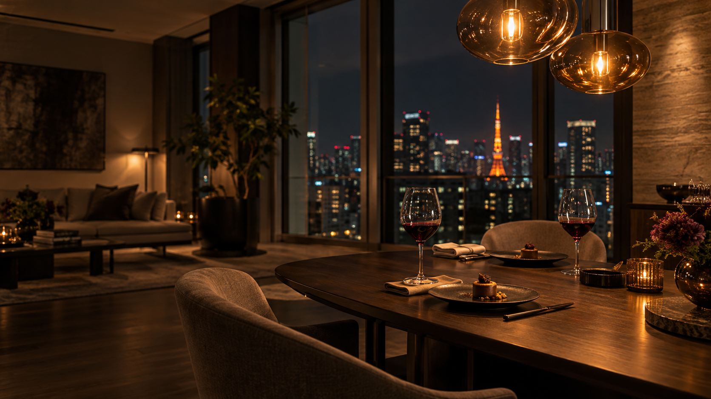

食後の会話が、まだ終わらない夜。「もう一杯、うちで」と、気負わず言える部屋があったら。特別な演出を重ねるよりも、一緒にいる人が自然にくつろげること。その心地よさを、インテリアから考えてみませんか。
01
もてなしは、座る場所から。
見た目に惹かれる椅子と、ゆっくり座りたくなる椅子。その両方を満たす一脚を考えるとき、テーブルとの高さや、隣の人との距離も欠かせません。
普段の食事から人を招く夜まで、どのように使いたいか。部屋の広さと人数、行き来のしやすさを確かめながら、ダイニングのサイズと配置を決めていきます。
02
灯りで、会話の温度を変える。
明るい天井照明をひとつ灯すだけでは、思い描いた夜の雰囲気にならないこともあります。テーブルに落ちる光、部屋の奥にある小さな灯り。光の重なりが、空間に奥行きをつくります。
大切なのは、暗くすること自体ではなく、相手の表情や手元が見え、落ち着いて過ごせること。ペンダントの高さや光の向きも含めて、家具と一緒に考えます。
03
食後に、もうひとつの居場所を。
テーブルで食事を楽しんだあと、ソファへ移って話す。そんな小さな移動が、時間の流れを変えてくれます。リビングには、グラスを置くサイドテーブルや、手を伸ばせる場所の灯りを。
窓辺のカーテンで外からの視線を整え、ソファやラグの素材感をそろえる。ひとつずつの選択が、気を張らずに過ごせる部屋につながります。
04
誰かのために整えた部屋は、自分にも心地いい。
人を招くために考えた座り心地も、やわらかな灯りも、普段は自分が楽しむもの。誰かと過ごす夜だけでなく、ひとりで帰宅した日にも、その空間は待っています。
nicomade menが提案するのは、家具・カーテン・照明までつながった部屋づくり。もてなす時間と、自分を整える時間。その両方を、ひとつの空間に。